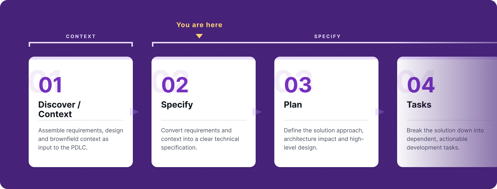

Review a spec or plan

What are you reviewing?
The spec says what must be built and how anyone will know it works. The plan says how, and the tasks break the plan into ordered, bounded pieces of work. They are reviewed by different people at different gates, but the habits are the same, so they share a page. The Product Owner approves the spec, the FDA approves the plan, and the FDE approves the tasks.